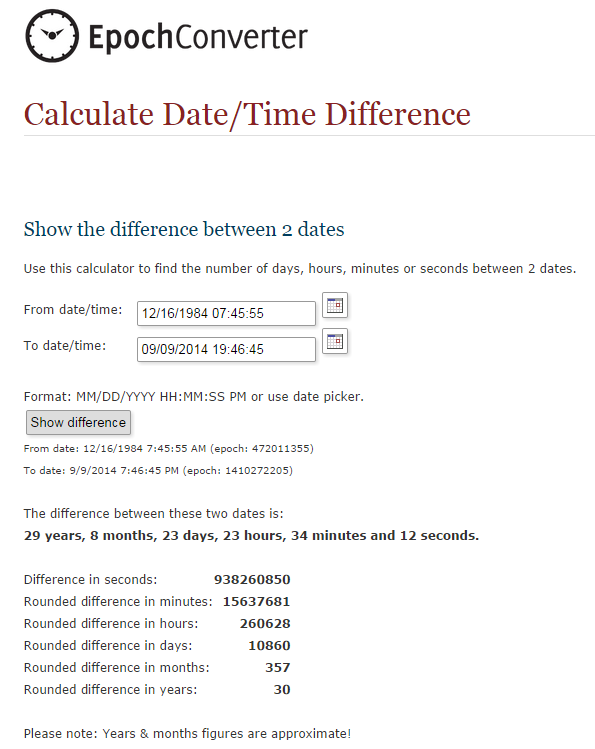

Java 8: Difference between two LocalDateTime in multiple units
I am trying to calculate the difference between two LocalDateTime.
The output needs to be of the format y years m months d days h hours m
minutes s seconds. Here is what I have written:
import java.time.Duration; import java.time.Instant; import java.time.LocalDateTime; import java.time.Period; import java.time.ZoneId; public class Main { static final int MINUTES_PER_HOUR = 60; static final int SECONDS_PER_MINUTE = 60; static final int SECONDS_PER_HOUR = SECONDS_PER_MINUTE * MINUTES_PER_HOUR; public static void main(String[] args) { LocalDateTime toDateTime = LocalDateTime.of(2014, 9, 9, 19, 46, 45); LocalDateTime fromDateTime = LocalDateTime.of(1984, 12, 16, 7, 45, 55); Period period = getPeriod(fromDateTime, toDateTime); long time[] = getTime(fromDateTime, toDateTime); System.out.println(period.getYears() + " years " + period.getMonths() + " months " + period.getDays() + " days " + time[0] + " hours " + time[1] + " minutes " + time[2] + " seconds."); } private static Period getPeriod(LocalDateTime dob, LocalDateTime now) { return Period.between(dob.toLocalDate(), now.toLocalDate()); } private static long[] getTime(LocalDateTime dob, LocalDateTime now) { LocalDateTime today = LocalDateTime.of(now.getYear(), now.getMonthValue(), now.getDayOfMonth(), dob.getHour(), dob.getMinute(), dob.getSecond()); Duration duration = Duration.between(today, now); long seconds = duration.getSeconds(); long hours = seconds / SECONDS_PER_HOUR; long minutes = ((seconds % SECONDS_PER_HOUR) / SECONDS_PER_MINUTE); long secs = (seconds % SECONDS_PER_MINUTE); return new long[]{hours, minutes, secs}; } }
The output that I am getting is 29 years 8 months 24 days 12 hours 0 minutes
50 seconds. I have checked my result from this website (with values
12/16/1984 07:45:55 and 09/09/2014 19:46:45). The following screenshot
shows the output:

I am pretty sure that the fields after the month value is coming wrong from my code. Any suggestion would be very helpful.
Update
I have tested my result from another website and the result I got is different. Here it is: Calculate duration between two dates (result: 29 years, 8 months, 24 days, 12 hours, 0 minutes and 50 seconds).
Update
Since I got two different results from two different sites, I am wondering if
the algorithm of my calculation is legitimate or not. If I use following two
LocalDateTime objects:
LocalDateTime toDateTime = LocalDateTime.of(2014, 9, 10, 6, 40, 45); LocalDateTime fromDateTime = LocalDateTime.of(1984, 12, 16, 7, 45, 55);
Then the output is coming: 29 years 8 months 25 days -1 hours -5 minutes -10
seconds.
From this link it should be 29 years 8 months 24 days 22 hours, 54 minutes
and 50 seconds. So the algorithm needs to handle the negative numbers too.
Note the question is not about which site gave me what result, I need to know the right algorithm and need to have right results.
Answer
Unfortunately, there doesn't seem to be a period class that spans time as well, so you might have to do the calculations on your own.
Fortunately, the date and time classes have a lot of utility methods that simplify that to some degree. Here's a way to calculate the difference although not necessarily the fastest:
LocalDateTime fromDateTime = LocalDateTime.of(1984, 12, 16, 7, 45, 55); LocalDateTime toDateTime = LocalDateTime.of(2014, 9, 10, 6, 40, 45); LocalDateTime tempDateTime = LocalDateTime.from( fromDateTime ); long years = tempDateTime.until( toDateTime, ChronoUnit.YEARS ); tempDateTime = tempDateTime.plusYears( years ); long months = tempDateTime.until( toDateTime, ChronoUnit.MONTHS ); tempDateTime = tempDateTime.plusMonths( months ); long days = tempDateTime.until( toDateTime, ChronoUnit.DAYS ); tempDateTime = tempDateTime.plusDays( days ); long hours = tempDateTime.until( toDateTime, ChronoUnit.HOURS ); tempDateTime = tempDateTime.plusHours( hours ); long minutes = tempDateTime.until( toDateTime, ChronoUnit.MINUTES ); tempDateTime = tempDateTime.plusMinutes( minutes ); long seconds = tempDateTime.until( toDateTime, ChronoUnit.SECONDS ); System.out.println( years + " years " + months + " months " + days + " days " + hours + " hours " + minutes + " minutes " + seconds + " seconds."); //prints: 29 years 8 months 24 days 22 hours 54 minutes 50 seconds.
The basic idea is this: create a temporary start date and get the full years to the end. Then adjust that date by the number of years so that the start date is less then a year from the end. Repeat that for each time unit in descending order.
Finally a disclaimer : I didn't take different timezones into account (both dates should be in the same timezone) and I also didn't test/check how daylight saving time or other changes in a calendar (like the timezone changes in Samoa) affect this calculation. So use with care.
Suggest
Unfortunately, there doesn't seem to be a period class that spans time as well, so you might have to do the calculations on your own.
Fortunately, the date and time classes have a lot of utility methods that simplify that to some degree. Here's a way to calculate the difference although not necessarily the fastest:
LocalDateTime fromDateTime = LocalDateTime.of(1984, 12, 16, 7, 45, 55); LocalDateTime toDateTime = LocalDateTime.of(2014, 9, 10, 6, 40, 45); LocalDateTime tempDateTime = LocalDateTime.from( fromDateTime ); long years = tempDateTime.until( toDateTime, ChronoUnit.YEARS ); tempDateTime = tempDateTime.plusYears( years ); long months = tempDateTime.until( toDateTime, ChronoUnit.MONTHS ); tempDateTime = tempDateTime.plusMonths( months ); long days = tempDateTime.until( toDateTime, ChronoUnit.DAYS ); tempDateTime = tempDateTime.plusDays( days ); long hours = tempDateTime.until( toDateTime, ChronoUnit.HOURS ); tempDateTime = tempDateTime.plusHours( hours ); long minutes = tempDateTime.until( toDateTime, ChronoUnit.MINUTES ); tempDateTime = tempDateTime.plusMinutes( minutes ); long seconds = tempDateTime.until( toDateTime, ChronoUnit.SECONDS ); System.out.println( years + " years " + months + " months " + days + " days " + hours + " hours " + minutes + " minutes " + seconds + " seconds."); //prints: 29 years 8 months 24 days 22 hours 54 minutes 50 seconds.
The basic idea is this: create a temporary start date and get the full years to the end. Then adjust that date by the number of years so that the start date is less then a year from the end. Repeat that for each time unit in descending order.
Finally a disclaimer : I didn't take different timezones into account (both dates should be in the same timezone) and I also didn't test/check how daylight saving time or other changes in a calendar (like the timezone changes in Samoa) affect this calculation. So use with care.